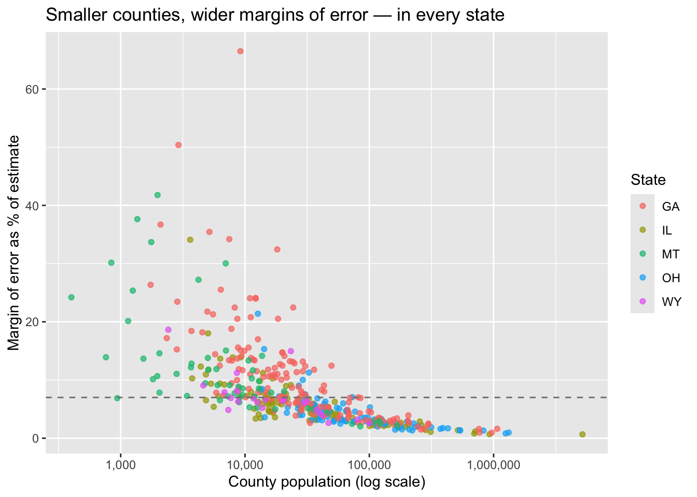

library(tidyverse)
library(tidycensus)Assignment 2: Who Do We Know the Least About?
Measuring uncertainty in American Community Survey data
Setup
The question
For Illinois, I’ve chosen to examine median home value (variable B25077_001). Housing markets vary dramatically across the state, from Chicago’s urban core to rural farming counties, but ACS estimates in sparsely populated areas often come with wider margins of error. I want to assess not only where property values are highest, but also which counties’ estimates are statistically reliable enough to inform housing policy or investment decisions.
Choosing what to measure
my_state <- "IL" # two-letter abbreviation, in quotes
my_variable <- "B25077_001" # the variable code, in quotesPulling the data
county_data <- get_acs(
geography = "county",
variables = my_variable,
state = my_state,
year = 2023,
survey = "acs5"
)Let’s look at what came back.
dim(county_data)[1] 102 5head(county_data)# A tibble: 6 × 5
GEOID NAME variable estimate moe
<chr> <chr> <chr> <dbl> <dbl>
1 17001 Adams County, Illinois B25077_001 155900 4554
2 17003 Alexander County, Illinois B25077_001 58700 10578
3 17005 Bond County, Illinois B25077_001 133100 13683
4 17007 Boone County, Illinois B25077_001 198600 8350
5 17009 Brown County, Illinois B25077_001 142200 19435
6 17011 Bureau County, Illinois B25077_001 121900 3733Illinois holds 102 counties.
How big is the margin of error?
A margin of error of 3,000 means something very different for an estimate of 20,000 than for an estimate of 200,000. To compare across places, we need it as a percentage.
county_data <- county_data %>%
mutate(moe_pct = moe / estimate * 100)Now sort to see which counties are measured least reliably.
county_data %>%
arrange(desc(moe_pct)) %>%
select(NAME, estimate, moe, moe_pct) %>%
head(10)# A tibble: 10 × 4
NAME estimate moe moe_pct
<chr> <dbl> <dbl> <dbl>
1 Hardin County, Illinois 91700 31269 34.1
2 Alexander County, Illinois 58700 10578 18.0
3 Jasper County, Illinois 122900 17070 13.9
4 Hamilton County, Illinois 108800 15103 13.9
5 Brown County, Illinois 142200 19435 13.7
6 Calhoun County, Illinois 174000 21433 12.3
7 Pulaski County, Illinois 81000 9539 11.8
8 Massac County, Illinois 118000 13228 11.2
9 Scott County, Illinois 101700 11145 11.0
10 Bond County, Illinois 133100 13683 10.3Hardin County has the largest margin of error relative to its estimate (34.10%) in Illinois, which is the least reliable
Sorting counties into reliability categories
county_data <- county_data %>%
mutate(reliability = case_when(
moe_pct < 3 ~ "High confidence",
moe_pct < 7 ~ "Moderate",
TRUE ~ "Low confidence"
))
count(county_data, reliability)# A tibble: 3 × 2
reliability n
<chr> <int>
1 High confidence 21
2 Low confidence 27
3 Moderate 54Based on the summary statistics, since the median is 5.27% and the 3rd quartile is 7.09%, the original 3%/6% thresholds would put most counties in “Moderate” or “Low”. As a result, 21 counties are classified as “High confidence”, 54 as “Moderate” and 27 as “Low confidence”.
Is the margin of error bigger in small places?
To answer this we need population and our variable side by side, in the same row. That means a wide pull.
county_wide <- get_acs(
geography = "county",
variables = c(myvar = my_variable,
pop = "B01003_001"),
state = my_state,
year = 2023,
survey = "acs5",
output = "wide"
)
head(county_wide)# A tibble: 6 × 6
GEOID NAME myvarE myvarM popE popM
<chr> <chr> <dbl> <dbl> <dbl> <dbl>
1 17001 Adams County, Illinois 155900 4554 65166 NA
2 17003 Alexander County, Illinois 58700 10578 5042 NA
3 17005 Bond County, Illinois 133100 13683 16627 NA
4 17007 Boone County, Illinois 198600 8350 53316 NA
5 17009 Brown County, Illinois 142200 19435 6320 NA
6 17011 Bureau County, Illinois 121900 3733 33027 NAcounty_wide <- county_wide %>%
mutate(moe_pct = myvarM / myvarE * 100) %>%
mutate(reliability = case_when(
moe_pct < 3 ~ "High confidence",
moe_pct < 7 ~ "Moderate",
TRUE ~ "Low confidence"
))Now compare the average population of counties in each reliability category.
county_wide %>%
group_by(reliability) %>%
summarize(
n_counties = n(),
avg_population = mean(popE)
)# A tibble: 3 × 3
reliability n_counties avg_population
<chr> <int> <dbl>
1 High confidence 21 514207.
2 Low confidence 27 11301.
3 Moderate 54 29429.High confidence counties have an average population 45 times larger than Low confidence counties (514,207 vs 11,301), confirming that smaller counties yield less reliable ACS estimates. While 53% of counties are moderately reliable, the 27 Low confidence counties—all sparsely populated—would be risky to use for targeted policy decisions without additional data collection.
What this means for policy
What: The communities we know the least about in Illinois are its smallest, most rural counties. From my analysis, the 27 Low confidence counties—which include sparsely populated areas like Hardin, Pope, Calhoun, and Gallatin counties—have an average population of just 11,301 residents. These are precisely the places where ACS estimates are most unreliable, yet they represent a significant portion of Illinois’s geographic area.
Why: The survey is sample‑based, not a census, and reliability depends heavily on sample size. Smaller counties contribute fewer respondents, which produces wider margins of error around every estimate. The ACS’s own design prioritizes precision for larger populations, leaving rural communities with statistically noisy data.
Who: If a state agency distributing housing grants based on median home values, treating every county’s estimate as equally certain. Using the 27 Low confidence counties’ numbers at face value could misdirect funds—a county with an artificially high estimate might receive less aid than it actually needs, while another with a low estimate might be overlooked despite hidden poverty. The rural poor, already underserved, would be the ones hurt most.
Optional challenge: one function, five states
The county-level pull earlier in this report is hard-coded to one state. I wrapped it in a function, pull_county_reliability(), that takes a state abbreviation (plus optional variable and year) and returns each county’s estimate, margin of error, population, and moe_pct:
pull_county_reliability <- function(state_abbr, variable = "B25077_001", year = 2023) {
get_acs(
geography = "county",
variables = c(myvar = variable, pop = "B01003_001"),
state = state_abbr,
year = year,
survey = "acs5",
output = "wide"
) %>%
transmute(
state = state_abbr,
GEOID,
NAME,
estimate = myvarE,
moe = myvarM,
popE,
moe_pct = myvarM / myvarE * 100
)
}With purrr::map_dfr() the same analysis runs across several states at once. I picked five with very different settlement geographies: Illinois, Ohio, Georgia, Montana, and Wyoming — 428 counties in total.
states <- c("IL", "OH", "GA", "MT", "WY")
multi_state <- map_dfr(states, pull_county_reliability)
multi_state %>%
mutate(reliability = case_when(
moe_pct < 3 ~ "High confidence",
moe_pct < 7 ~ "Moderate",
TRUE ~ "Low confidence"
)) %>%
group_by(state, reliability) %>%
summarize(
n_counties = n(),
avg_population = mean(popE),
.groups = "drop"
)# A tibble: 15 × 4
state reliability n_counties avg_population
<chr> <chr> <int> <dbl>
1 GA High confidence 22 302228.
2 GA Low confidence 93 16234.
3 GA Moderate 44 60540.
4 IL High confidence 21 514207.
5 IL Low confidence 27 11301.
6 IL Moderate 54 29429.
7 MT High confidence 6 112466.
8 MT Low confidence 40 6267.
9 MT Moderate 10 17959.
10 OH High confidence 30 302595.
11 OH Low confidence 10 26528.
12 OH Moderate 48 50769.
13 WY High confidence 2 73840.
14 WY Low confidence 6 9072.
15 WY Moderate 15 25177.To measure the small-places-are-noisier pattern directly, I correlated county population (log scale) with moe_pct within each state:
multi_state %>%
group_by(state) %>%
summarize(correlation = cor(log(popE), moe_pct))# A tibble: 5 × 2
state correlation
<chr> <dbl>
1 GA -0.652
2 IL -0.677
3 MT -0.637
4 OH -0.669
5 WY -0.656ggplot(multi_state, aes(popE, moe_pct, color = state)) +
geom_point(alpha = 0.7) +
geom_hline(yintercept = 7, linetype = "dashed", color = "grey50") +
scale_x_log10(labels = scales::label_comma()) +
labs(
title = "Smaller counties, wider margins of error — in every state",
x = "County population (log scale)",
y = "Margin of error as % of estimate",
color = "State"
)
What I found: the small-places-are-noisier pattern holds everywhere. In all five states the correlation between population and moe_pct falls in a narrow band between -0.64 and -0.68, and the average High-confidence county is anywhere from 8× (Wyoming) to 45× (Illinois) more populous than the average Low-confidence county.
What differs between states is how much of the state is affected. In Montana, 40 of 56 counties and in Georgia, 93 of 159 fall into Low confidence, while in Ohio only 10 of 88 do. The rule is universal, but its footprint depends on settlement geography: states dominated by small rural counties simply have less trustworthy home-value data overall than states of evenly mid-sized counties like Ohio.